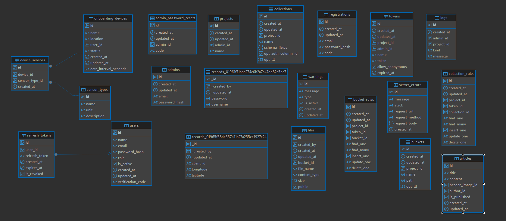

Database & Architecture
Sistem ini menggunakan dua jenis database dan memiliki dua level arsitektur yang perlu dipahami agar implementasi dan integrasi berjalan dengan benar.
1. Standalone Architecture (Sistem Sendiri)
Pada desain awal, sistem berjalan menggunakan PostgreSQL sebagai database utama.
Semua tabel inti seperti onboarding_devices, device_sensors, users, articles, dan lain-lain berada dalam PostgreSQL.
Data sensor langsung diproses dan disimpan ke tabel-tabel tersebut tanpa perantara.

2. Integrated Architecture (Sistem Terintegrasi dengan Hyperbase)
Untuk sistem yang siap produksi dan skalabilitas besar, arsitektur diperluas dengan mengintegrasikan Hyperbase.
Hyperbase digunakan untuk menyimpan raw data dari perangkat IoT sebelum data itu diolah dan dimasukkan ke PostgreSQL.

Penjelasan alur integrasi:
- Perangkat IoT mengirim data raw melalui MQTT ke backend.
- Backend menyimpan data mentah di Hyperbase sebagai data historis yang scalable.
- Proses ETL (Extract, Transform, Load) memindahkan data yang sudah diproses ke PostgreSQL untuk kebutuhan query cepat.
- Dashboard publik dan panel admin tetap hanya membaca data dari PostgreSQL.
3. Relasi Antar Tabel (PostgreSQL)
Beberapa tabel utama di PostgreSQL:
| Tabel | Deskripsi Singkat |
|---|---|
onboarding_devices | Menyimpan daftar perangkat yang terdaftar |
device_sensors | Menyimpan jenis sensor yang terpasang pada setiap perangkat |
sensor_types | Master data jenis sensor |
users | Data admin/operator, termasuk autentikasi |
articles | Konten informasi dan edukasi |
warnings | Peringatan dini dari sistem |
server_errors | Log error yang tercatat |
refresh_tokens | Token refresh untuk autentikasi |